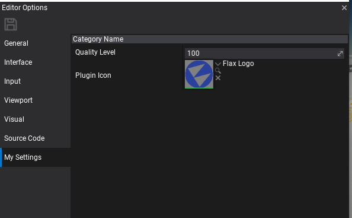

HOWTO: Create a custom editor settings
In this tutorial you will learn how to extend the default editor settings.
1. Preapre
In most cases, additional editor settings are used by the editor plugins. To learn how to create own see this tutorial. However, you can access the editor options from any C# code running in the editor (including scripts). Using FLAX_EDITOR define can help you to include editor-related code into the game scripts.
2. Create settings object
The first step is to design the data container for your options. To do so simply create a C# class that contains all required properties. This object is used for options serialization and editing in options window so you can use Custom Editors attributes such as Tooltip.
Example options:
public class MySettings
{
[EditorOrder(0), EditorDisplay("Category Name"), Limit(0), Tooltip("Helper tooltip")]
public float QualityLevel = 100;
[EditorOrder(10), EditorDisplay("Category Name"), Tooltip("Texture property")]
public Texture PluginIcon;
}
3. Setup options
The next step is to inform Flax Editor about your settings type. This can be done via dedicated Editor C# API that handles custom settings.
public class MyCustomPlugin : EditorPlugin
{
public static readonly string SettingsType = "My Settings";
/// <inheritdoc />
public override void InitializeEditor()
{
base.InitializeEditor();
// Register custom options factory
Editor.Options.AddCustomSettings(SettingsType, () => new MySettings());
// You can register for event to track settings being edited by user
Editor.Options.OptionsChanged += OnOptionsChanged;
}
private void OnOptionsChanged(EditorOptions options)
{
// Use helper method to access the data
var customOptions = options.GetCustomSettings<MySettings>(SettingsType);
Debug.Log("Options: " + customOptions.QualityLevel);
}
/// <inheritdoc />
public override void Deinitialize()
{
// Ensure to cleanup on plugin shutdown
Editor.Options.OptionsChanged -= OnOptionsChanged;
Editor.Options.RemoveCustomSettings(SettingsType);
base.Deinitialize();
}
}
4. Test it out!
Now, in editor and use main menu option Tools -> Options and pick you settings category.
